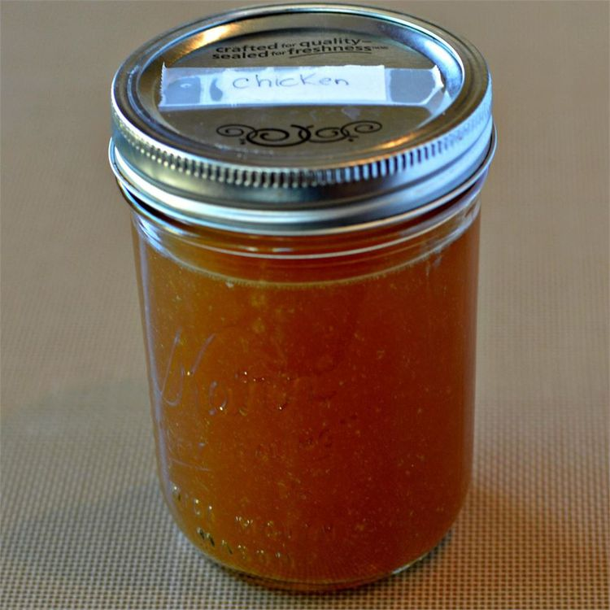

Saturday Chicken Stock
This is not a quick recipe, but the results are worth it. I usually take an entire Saturday to make this, but most of the time it's simmering on the stove, so it's not labor intensive. Chicken bones browned with celery, onions and carrots make this broth dark and rich. I freeze leftover rotisserie chicken bones and make this about once a month
or so. I freeze the stock in quart bags and use one whenever I would use chicken broth.

Ingredients
- 1 Tbsp - Olive oil
- 2 - Rotisserie chicken carcasses, broken into pieces
- 4 - Carrots, cut into chunks
- 2 - Large onions, cut into chunks
- 3 - Stalks celery, with leaves
- ½ Cup - Dry white wine
- 1 Tbsp - Whole peppercorns
- 5 - Whole cloves
- 2 - Bay leaves
- 1 - Sprig fresh thyme
- 5 - Quarts water
Directions
- Preheat oven to 400 degrees F (200 degrees C.
- Pour olive oil into the bottom of a large roasting pan; top with chicken carcass pieces, carrots, onions, and
celery.
- Roast in the preheated oven, stirring occasionally, until bones and vegetables are browned, about 1 hour. 4. Transfer roasted chicken bones and vegetables to an 8-quart stockpot. Pour wine into the roasting pan, scraping the bottom to release any browned bits of food; pour into stockpot. Add peppercorns, cloves, bay leaves, and thyme to stockpot. Cover the mixture with water and bring to a slow simmer. Set heat to low and simmer, straining off fat as needed, for at least 5 hours. Strain stock through a cheesecloth; refrigerate or
freeze stock.
Nutrition Facts
Per Serving:
31 calories; 0.9 g total fat; 0 mg cholesterol; 28 mg sodium. 4 g carbohydrates; 0.5 g protein.